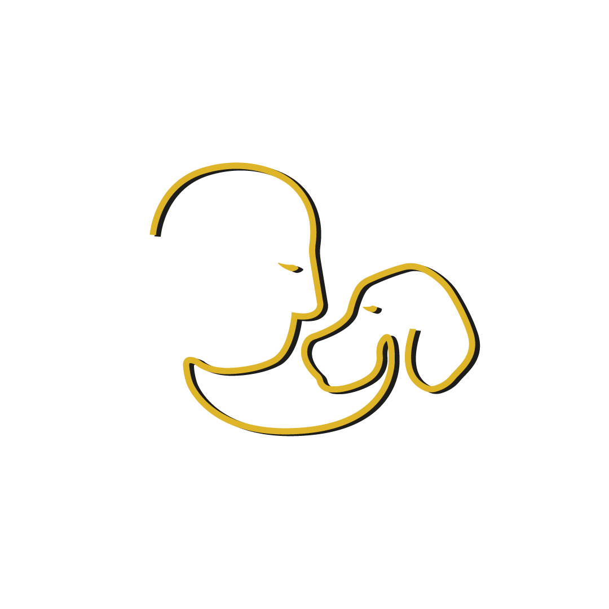

Início Visão geral do dia
—
AD
Seu trabalho
Começar o dia
Preparando a sua área de trabalho…
Carregando…
Peludinhos frequentes do Day Care. Clique no nome para ver e editar a ficha completa. Quem saiu fica na aba Inativos — o botão aqui embaixo abre a lista, e o Voltou reativa quem está voltando.
| Nº | Nome — Raça — Tutor — Dias atuais | Vem | Idade |
|---|
Registro da adaptação (45 dias). Marque como o peludinho passou o dia — rápido, só tocando.
Como foi a adaptação hoje?
Amora · 04/06/2026 · 2º dia de adaptação
Farrogeou (rosnou)?
Deixou ser cheirado?
Cheirou os outros?
Estava retraído?
Estava à vontade?
Brincou?
Pediu colo?
Ficou atrás de alguém?
Foi para as portas?
Chorou?
Tomou água?
Fez xixi?
Fez cocô?
Chamada · hoje
Toque VEIO ou FALTOU em cada peludinho. A lista de faltas vai para a Gestão. Toque no card para ver a ficha.
0
Hóspedes hoje
0
Moradora · Repolho
Selecione o peludinho hospedado para registrar a passagem de plantão. Turnos: Diurno 07h–19h · Noturno 19h–07h.
Terminou o seu turno?
Passe o plantão de cada peludinho primeiro. Depois toque aqui: eu monto o resumo do turno, mostro para você conferir e mando ao grupo da Gestão.
Protocolo do Plantão
Regras imprescindíveis — valem durante todo o plantão.
- Ler com atenção o Check-in de hospedagem de cada peludinho. Qualquer dúvida, ligue: 31 99764-4296 ou 31 99111-1826.
- Gerar bem-estar aos FILHOts.
- Garantir que a alimentação seja dada corretamente — temos diversos peludinhos com alergias severas.⚠ NENHUMA ALIMENTAÇÃO PODE SER TROCADA
- Garantir que o peludinho receba corretamente o medicamento, caso necessário.
- O plantonista não pode sair da empresa enquanto estiver no horário de plantão.
Antes de sair — Plantão Noturno
Confirme cada item abaixo. Ao terminar, toque em salvar.
Café da manhã
Só quem dormiu aqui. Cada um come o que está na ficha dele — nenhuma alimentação pode ser trocada. Marque conforme for servindo.
💊 Medicações — por horário
Carregando…
⚠ Problemas — por tempo do plantão
Só quem teve alguma coisa. Quem passou bem não ocupa parede.
Carregando…
Os três tempos do plantão
Toque num FILHOt para abrir o relatório completo.
Carregando…
Os textos prontos para os tutores continuam na tela
Plantão da noite.
Check-in da estadia. Busque o FILHOt que está chegando. No retorno, a ficha já vem pré-preenchida da última estadia — a Consultora só confere e ajusta. Se for a primeira vez dele na Zêluz, use Novo Hóspede.
Busca no cadastro-mestre (mesmo do Day Care). A lista aparece conforme você digita.
Conferência do check-in. Confira pertences, ração e medicação de cada hóspede antes de liberar a estadia. Nenhum item crítico fecha sem o V verde — e fica registrado quem conferiu e quando.
Todas as hospedagens: quem está agora, quem chega e quem já saiu. Mudou a data com a tutora? Corrija em Mudar datas — o que está aqui vale mais que a planilha. Toque no nome para abrir a ficha completa do peludinho.
Quem não comeu hoje. Vem do 1º e do 2º horário. A mensagem para cada tutor já está pronta — copie, mande e registre aqui, para ninguém avisar duas vezes nem ficar sem aviso.
Avisar os tutores
Check-out da estadia. O caminho inverso: o monitor confere tudo que vai voltar (pertences, ração/medicação que sobrou, o que o tutor mandou e o que foi comprado aqui) e desce com o FILHOt para a recepção. A recepção confere junto com o tutor, o tutor assina e recebe o PDF.
Perguntas do Day Care
O Day Care precisa de uma resposta agora. Quando um FILHOt chega sem o que precisa — comida, por exemplo — a monitora pergunta aqui. Quase sempre a resposta já existe: o tutor deixou comida guardada. Responda e o nome dele aparece piscando na tela de quem está com ele.
Avisos de estoque de medicação
Avisos de estoque de medicação. Quando um remédio de um hóspede está acabando, o aviso chega aqui — rastreado. Registre cada providência (liguei para o tutor, ele traz amanhã) até resolver. Nada verbal: tudo fica escrito, com quem, quando e o que foi feito.
Avisos de ração
Ração insuficiente para a estadia. Gerado pela Conferência do check-in quando a ração pesada não cobre os dias hospedados. Mesmo padrão pendente → resolvido — registre a providência até resolver.
Ocorrências dos hóspedes
O que aconteceu com o FILHOt durante a estadia. Registrado por quem viu — na Conferência do check-in ou no plantão — e chega aqui para quem fala com o tutor (Consultoras e Supervisão). Depois de ligar, registre o que foi dito e marque "avisei o tutor". Nada verbal: fica escrito, com quem e quando.
Ocorrências do Day Care
O que o check-in e o check-out do Day Care encontraram. Alteração no corpo ou cocô alterado vira ocorrência aqui — inclusive de hóspede que participou do Day Care durante o dia. Mesmo padrão: avise o tutor, registre o que foi dito e dê o desfecho.
Cuidado Vet. Busque o FILHOt que você vai examinar — hóspede ou aluno do Day Care. Abra a ficha para registrar a consulta, a observação para o tutor e prescrever. A consulta é a fonte que cria, altera ou suspende a medicação — desce viva e dispara os alarmes.
Agenda
Calendário de frequência e reservas — próxima etapa.
Peludinhos que saíram do Day Care. O cadastro e o histórico ficam guardados aqui. Clique no nome para abrir a ficha completa — ou toque em Voltou para reativar o peludinho de uma vez.
| Nº | Peludinho | Tutor | Data da saída | Motivo da saída | Voltou? |
|---|

Relatório de Aulunos
Frequência e presença dos aulunos do Day Care — próxima etapa.
Quem está faltando alguma coisa. Vacinas, antiparasitário, coleira, vermífugo (ou exame de fezes). Toque num item para abrir a lista dele, com «Feito hoje» e a mensagem pronta. A pesagem do mês tem tela própria — Peso, aqui do lado. Quem faz exame de fezes não precisa de vermífugo — e o contrário também vale.
Resumo da prevenção
O que vai para a TV. Escolha o item, busque o FILHOt e lance. Vale para o dia escolhido acima — dá para deixar marcado com antecedência. O que você lançar aqui aparece no dashboard do Day Care — ninguém precisa mais escrever na planilha.
O que se preenche sozinho
Estes o app põe na planilha sem ninguém digitar — não precisa lançar aqui embaixo:
Reposição · Falta avisada · Aniversariante ·
Cliente novo (45 dias) · Aulunos com restrições ·
Hóspedes com restrições · Adaptação.
Reposição, falta e aniversário vão até 14 dias à frente.
Ele confere sozinho a cada 5 minutos e nunca apaga o que uma pessoa escreveu.
O que tem horário continua sendo lançado aqui embaixo — é a hora que faz o alarme tocar na TV: Banho · Veterinário · Avaliação · Sai cedo · Medicação. E também Troca de coleira, Troca de escova, Hidratação, Vermífugo, Carrapaticida e Festa.
Ponte com a planilha
Só a Gestão e a Diretoria veem este cartão. A senha fica guardada e nunca mais aparece escrita — nem para você.
Zelozinha
Escolha uma data
— peludinhos com cuidados
Escolha uma data para conferir os cuidados.
Os peludinhos encaminhados aparecerão aqui.
As pendências do Snoopy serão confirmadas para a data escolhida.
Montando a turma do dia…
Quem tem banho fixo. Ligue o interruptor do FILHOt e diga o ritmo (semanal ou quinzenal), o dia, a hora, a partir de quando e o shampoo — sem abrir a ficha. O app lança sozinho na planilha, na coluna Banho e Hora Banho, hoje e nos próximos 14 dias. Nada é gravado antes de você tocar em Salvar.
Montando a lista dos banhos combinados…
Está vencendo. Escolha o dia no menu — Hoje, segunda, terça, quarta, quinta ou sexta — e veja quem vem naquele dia com vacina, carrapaticida, coleira, vermífugo ou troca de escova vencendo, mais o que nunca foi registrado na ficha. A mensagem para o tutor já sai pronta — copie, mande no WhatsApp e registre aqui o que ele respondeu. O cartão só fecha quando a ficha estiver atualizada.
Carregando os vencimentos do próximo dia…
Rotina de abertura do turno — Monitor 1. Marque cada item conforme executa. Fica registrado com horário e quem fez.
Banco de atividades dos monitores. A Gestão pode acrescentar ou remover. Depois cada atividade é distribuída entre os 6 monitores.
Gestão dos colaboradores. Nomeie cada pessoa, defina a senha, o horário de entrada e saída, os dias em que ela trabalha e o que ela enxerga no sistema. As mudanças valem na hora, em todos os aparelhos — sem precisar de programador.
Área restrita à Gestão. Relatório completo das senhas de acesso de todas as pessoas. A Supervisão e a equipe não têm acesso a esta lista.
Relatório de senhas de acesso
A senha que cada pessoa digita para entrar no sistema, da Gestão à equipe. Esta lista é gerada automaticamente do cadastro — sempre atualizada.
Quem tentou entrar e não conseguiu
Quando alguém da equipe digita a senha certa num celular que ainda não foi liberado, a tentativa aparece aqui. Toque em "Liberar este celular" e ela já entra na próxima vez — sem você precisar ir até lá.
Isto não mede pessoas — mede o dia. O tempo sozinho não diz nada: 40 minutos com 50 FILHOts é ótimo; com 12, é sinal de alguma coisa. Por isso a conta é minutos por FILHOt, comparada com a média da mesma atividade no mesmo dia da semana.
Bolsa do check-out — pontos do mês
10 pontos quando a bolsa desce completa. Faltou 1 item: 5. Faltou 2: 2. Faltou 3 ou mais: zero. Toque no nome para ver onde os pontos foram perdidos.
Hoje
Quem está fora da média
Até 12% de diferença é variação normal do dia. Acima disso, vale uma conversa — sempre em forma de pergunta, nunca de acusação.
Média por atividade e dia da semana
Quanto mais dias medidos, mais confiável a média. Atividade com menos de 3 medições ainda não tem base.
O acerto é por noite. O sistema conta quantos FILHOts dormiram aqui em cada noite e calcula o valor pela tabela. A Repolho nunca entra na conta — ela mora aqui. Kako e Stopa contam quando estão hospedados.
Noites
Últimos 30 dias, e as noites guardadas ou a pagar de antes, até serem pagas. Escreva quem passou a noite e toque em Paguei esta noite ou em Guardar para pagar junto (quando ela prefere receber depois).
A pagar por pessoa
Tabela de valores
Só a Gestão altera, com a senha. A tabela vale para toda noite ainda sem valor gravado (o cartaz mostra quais mudam antes de salvar); as guardadas e as pagas guardam o valor da época.
É uma rotina de cuidado, não uma cobrança. A mensagem já vem pronta e personalizada: pergunta de cio só para as fêmeas, e microchip só para quem ainda não tem cadastrado.
Procure o FILHOt, pese e salve. Vai para a mesma ficha que a Gestão e a veterinária veem — e mudança fora do comum avisa o grupo da veterinária.
Clique num dia para ver o que foi montado, quem participou e quem não pôde. É a resposta pronta para quando um tutor — ou um veterinário de plantão — perguntar o que o FILHOt comeu naquele dia.
Tudo que dá para baixar e todas as listas, num lugar só. Ficam aqui para o menu não virar uma lista sem fim.
Resumo do dia — Diário do Daycare
Vai para o grupo Diário do Daycare no Telegram, com o Enriquecimento Ambiental do dia, quem comeu e quem não comeu, o que teve de diferente (dizendo a parte do corpo) e a medicação. O grupo Zêluz · Plantão AuAulândia fica só com o plantão do hotel. Sai sozinho a partir das 18h — o botão é para adiantar ou reenviar.
Aniversariantes
A tabela dos próximos 7 dias vai para o grupo da Gestão todo dia de manhã — inclusive sábado, domingo e feriado, porque o FILHOt faz aniversário no dia dele, não no dia em que a creche abre.
Listas
Saíram do menu e vieram para cá.
Os ajustes do sistema. É aqui que moram os valores da hospedagem — pernoite, diária e fim de ano — e o jeito como o app fala com o Telegram e com a planilha. Por isso só a Gestão e a Diretoria entram.
Valores da hospedagem
O preço do pernoite e da diária de hotel em cada temporada — baixa, alta e fim de ano —, os feriados em que a casa não recebe nem entrega, e a ponte com a planilha de Hospedagem. Os valores valem para todos os orçamentos novos: os já salvos guardam o preço da época. Nada é gravado antes do botão Salvar tabela.
Valores do Day Care
Os dois preços da diária avulsa — o dia a mais que o tutor paga, um valor para quem é matriculado e outro para quem não é — e as vagas por dia para reposição + avulso. As mensalidades dos planos (Mensal · Trimestral · Semestral) continuam na tabela comercial, em Configurações › Planos do Day Care. Aqui moram também o preço da escova e os dois números da dose do vermífugo pelo peso. Nada é gravado antes do botão Salvar valores.
Carregando os valores do Day Care…
Planos do Day Care
A mensalidade de cada plano — Silver (mensal), Gold (trimestral) e Black (semestral) — para 1 a 5 vezes por semana, o desconto de irmão no plano e o desconto na AuAulândia de quem tem plano. O valor do plano é a mensalidade vezes os meses do tipo. Salvar pede a senha da Adriana e o motivo, e mostra antes o que muda nos meses: mês fechado não muda, e o plano que já tem o valor gravado guarda o valor da época. Nada é gravado antes do botão Salvar a tabela.
Carregando a tabela de planos…
Avisos no Telegram
Quando a monitora marca uma alteração no check-in e tira a foto, a foto vai sozinha para o grupo da veterinária — com o nome do FILHOt, o que foi encontrado e quem viu. Ninguém precisa lembrar de mandar.
Para ligar: crie o bot no @BotFather, coloque-o no grupo e publique a ponte
integracao-telegram/Codigo.gs como App da Web. O passo a passo está dentro do arquivo. O token do bot fica na ponte, nunca aqui — esta página é pública.Ponte com a planilha
A ponte que leva o que a recepção lança para a planilha do Day Care — e de lá para a TV. Ela se configura na própria tela onde o lançamento acontece, para quem mexe ver o efeito na hora: Central Zêluz › Day Care › Lançamentos do dia.
Horários esperados de cada protocolo
A janela em que cada protocolo deve acontecer. É esta régua que faz o quadro Cumprimento dos protocolos — no Dashboard da Adriana e no da Márcia — dizer “no prazo” ou “fora do horário”. Ajuste à rotina real da casa.
Protocolos passo a passo
O passo a passo que aparece na tela de quem executa, na hora de executar. Escreva um passo por linha, nas suas palavras — o app mostra exatamente o que a Gestão escreveu, sem redigir nada — e sem palavra difícil: quem lê está com o peludinho na mão. A régua é a de sempre: uma criança de 12 anos tem de conseguir executar só com o que está escrito.
Carregando os protocolos…
Prevenção — coleira repelente
Quanto tempo cada coleira protege e com quanta antecedência o app avisa que ela está para vencer. É a mesma régua do bloco Coleira vencendo na Prevenção, do quadro no Dashboard das Consultoras e do selo “vence em N dias” na ficha.
Carregando os números da prevenção…
Horários das refeições
A que horas a casa serve o café da manhã, o almoço e o jantar. É desta hora que sai a hora do remédio amarrado à refeição: jantar às 18:30 menos 45 minutos = 17:45. Vale para a aba Medicamentos da ficha, para o Check-in e para o despertador das doses.
Carregando os horários das refeições…
Mensagens prontas
As mensagens que a Central manda ao tutor na véspera, em Vencimentos. É uma mensagem por assunto: quem tem vacina e vermífugo vencendo recebe duas, cada uma com o seu Copiar. Escreva do seu jeito — o que estiver entre chaves é trocado pelo app.
{tutor} o primeiro nome de quem cuida · {filhot} só o nome · {ofilhot} o nome com o artigo (“o Otávio”, “a Lana”) · {dofilhot} o nome com o “de” junto (“do Otávio”, “da Lana”) · {dele} vira “dela” quando é fêmea · {ela} vira “ele” ou “ela”
{quando} “amanhã” só quando é mesmo amanhã; senão “na segunda-feira (22/09), dia dele no Day Care” · {dia} o dia por extenso · {vacina} o nome da vacina (Múltipla, Gripe, Raiva) · {item} o item com o artigo certo (“o vermífugo”, “a coleira repelente”) · {itens} a lista do que vence, com as datas · {itens_abertos} a lista do que nunca foi registrado na ficha · {vencer} vira “vence”, “vencem”, “venceu” ou “venceram”
{proximo_dia_vet_dele} e {data} o próximo dia dele que também é dia da nossa Veterinária
{dia_vet} e {semana_vet} o próximo dia de atendimento da nossa Veterinária (ela não atende às quintas) · {valor_escova} o preço da troca de escova · {fecho} a frase da autorização, escrita no último campo.
Escreva sempre no singular: com duas vacinas vencendo, o app troca sozinho “a vacina de” por “as vacinas de” e “vence” por “vencem”.
O que já venceu diz a data em que venceu: “vence {quando}”, “{quando} vence” e “{vencer} {dia}” viram sozinhos “venceu em 15/09”. Com um item vencido e outro ainda por vencer (ou vencidos em datas diferentes), cada um diz a sua data (“o vermífugo venceu em 15/09 e o carrapaticida vence em 28/09”) — nos textos escritos como os de fábrica. Em texto escrito de outro jeito, o app troca só o que reconhece, e o cartão avisa quando a frase não traz a data do que já venceu.
Aqui também mora a folga: quantos dias antes do vencimento o FILHOt já entra na lista.
{tutor} o primeiro nome de quem cuida · {filhot} só o nome · {ofilhot} o nome com o artigo (“o Otávio”, “a Lana”) · {dofilhot} o nome com o “de” junto (“do Otávio”, “da Lana”) · {dele} vira “dela” quando é fêmea · {ela} vira “ele” ou “ela”
{quando} “amanhã” só quando é mesmo amanhã; senão “na segunda-feira (22/09), dia dele no Day Care” · {dia} o dia por extenso · {vacina} o nome da vacina (Múltipla, Gripe, Raiva) · {item} o item com o artigo certo (“o vermífugo”, “a coleira repelente”) · {itens} a lista do que vence, com as datas · {itens_abertos} a lista do que nunca foi registrado na ficha · {vencer} vira “vence”, “vencem”, “venceu” ou “venceram”
{proximo_dia_vet_dele} e {data} o próximo dia dele que também é dia da nossa Veterinária
{dia_vet} e {semana_vet} o próximo dia de atendimento da nossa Veterinária (ela não atende às quintas) · {valor_escova} o preço da troca de escova · {fecho} a frase da autorização, escrita no último campo.
Escreva sempre no singular: com duas vacinas vencendo, o app troca sozinho “a vacina de” por “as vacinas de” e “vence” por “vencem”.
O que já venceu diz a data em que venceu: “vence {quando}”, “{quando} vence” e “{vencer} {dia}” viram sozinhos “venceu em 15/09”. Com um item vencido e outro ainda por vencer (ou vencidos em datas diferentes), cada um diz a sua data (“o vermífugo venceu em 15/09 e o carrapaticida vence em 28/09”) — nos textos escritos como os de fábrica. Em texto escrito de outro jeito, o app troca só o que reconhece, e o cartão avisa quando a frase não traz a data do que já venceu.
Aqui também mora a folga: quantos dias antes do vencimento o FILHOt já entra na lista.
Carregando as mensagens prontas…
Fotos do check-in do corpo
A foto da alteração sempre vai para o banco e para o grupo da Veterinária. Além disso, o app pode deixar uma cópia no próprio celular de quem tirou — para o time achar a foto mais rápido, sem abrir o app.
Carregando o ajuste das fotos…
Mensagem de entrada
A placa que aparece na tela de entrada, acima do campo de senha. Todo mundo vê, qualquer que seja o papel — ela não bloqueia nada e não é clicável. As palavras inaceitável, erro e violação saem em negrito sozinhas, onde estiverem escritas.
Carregando a mensagem de entrada…
Logins e segurança
Quem usou o app hoje e o que cada um fez. É o rastro que o sistema guarda sozinho — ninguém digita nada aqui. Para mudar senha, papel ou quem acessa o quê, a tela é Operação › Time.
Carregando o rastro de hoje…
Celulares autorizados
Os aparelhos em que a equipe consegue entrar. O tipo (iPhone, Android) aparece assim que alguém usa o app naquele celular.
Carregando os celulares autorizados…
O detalhe minuto a minuto — tudo o que aconteceu, em ordem — está em Operação › Linha do tempo do dia.
Orçamento de hospedagem. Escolha o FILHOt, as datas e o sistema conta noite por noite: pernoite nos dias em que ele já viria ao Day Care, diária nos demais. O desconto do plano entra sozinho — e sai a mensagem pronta para mandar ao tutor.
Quem vai ficar
Primeiro: ele é auluno do Day Care? É isso que decide o desconto e quais noites são pernoite.
Dois FILHOts do mesmo tutor? Acrescente os dois — o desconto do 2º entra sozinho.
Período
Toque no campo e escolha no calendário — não dá para digitar, é assim que o ano errado não passa.
Orçamentos feitos
Quatro seções, todas recolhidas: toque no título para abrir a que você precisa. Quem já fez check-in sai daqui e passa a viver em Hóspedes de hoje — é lá que se faz a saída antecipada e o check-out.
Os valores da hospedagem, os feriados e a ponte com a planilha agora moram em Configurações › Valores da hospedagem. Só a Gestão altera; os orçamentos já salvos guardam o preço da época.
Renovação de planos
Quem precisa ser cobrado aparece primeiro. Toque no peludinho para abrir a ficha na aba Plano, renovar e copiar a mensagem para o tutor.
O tutor avisou que não vem? Lance aqui — vira um dia de reposição para ele usar depois. Quando ele vier repor, marque o uso. Nada se apaga: todo lançamento fica no extrato com a data, o motivo e quem lançou.
Reposições
Lista de troca
O tutor avisou que não vem num dia e quer repor em outro. Veja onde tem vaga e marque na hora, com o tutor no telefone.
Lançar falta avisada
O tutor avisou que o peludinho não vem. Isso registra uma reposição para combinar em outro dia.
Extrato
Marcar reposição ou dia extra — escolha o dia em que ele vem
O tutor avisou que o peludinho vem num dia que não é o dele. Eu confiro as reposições disponíveis e digo se o dia é reposição (não se cobra) ou avulso (diária a mais). Nada é gravado antes do botão.
O detalhe do tempo. O Painel do Dia virou parte dos dashboards — cada bloco foi para quem age sobre ele. O que ficou aqui é o que não cabe num quadro: o tempo das atividades por dia da semana, dia a dia e por pessoa, e a confiabilidade das plantonistas. Esta tela só observa: não altera nada.
Tempo das atividades
Quanto tempo cada etapa leva — montagem, almoço e finalização — por dia da semana, dia a dia e por quem conduziu.
Carregando…
Plantão da noite
As plantonistas são freelance — isto não é produtividade, é confiabilidade: quem assumiu, entregou o relatório, leu a passagem e deu a medicação. Mesmo período escolhido acima.
Carregando…
Tudo o que aconteceu, em ordem. Escolha o mês, depois o dia. Cada linha traz a hora, quem fez e o que foi — é o rastro que o app guarda de cada ação. Esta tela só observa: não altera nada.
Carregando os meses…
Carregando a sua rota de hoje…
Carregando a sua mesa do dia…
Carregando a escala e os planos…
Preparando a Agenda Márcia…
Preparando o dia da Márcia…
Carregando a casa de hoje…
Carregando o pendente e o resolvido do dia…
Carregando a casa e o dinheiro do mês…
O dinheiro que entrou vira registro. Busque o FILHOt, confira o valor do plano — calculado pela conta do Financeiro, nunca digitado — e registre a forma e a data do recebimento. É este lançamento que faz o "recebido" do mês sair de R$ 0,00.
Carregando…
Sair
No sistema real, encerra a sessão com segurança.